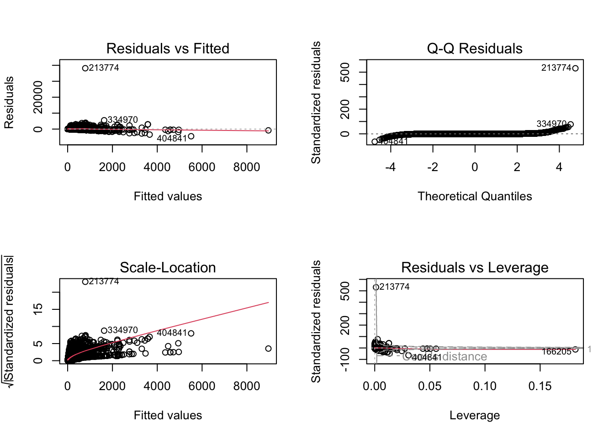

YTD Analysis of E-commerce Data
Abstract
This project explores e-commerce sales performance through the lens of applied business intelligence, combining statistical modeling in R with interactive visualization in Tableau. Using a dataset of over half a million online transactions, the analysis aimed to identify the key factors influencing purchase amounts and to derive insights for strategic decision-making.
After comprehensive data cleaning and transformation, exploratory analysis revealed that most sales originated from European markets, though transactions from Asia and other regions tended to have higher per-order values. A multiple linear regression model identified Quantity and Unit Price as the strongest predictors of total transaction value, while regional effects further highlighted differences in consumer behavior across markets.
The Tableau dashboard complements these findings by visualizing revenue trends, return rates, and customer performance, enabling dynamic exploration of sales patterns and business KPIs. Together, the statistical and visual analyses demonstrate how data-driven methods can enhance understanding of sales performance and inform actionable business strategies.
1. Introduction
In today’s data-driven retail environment, organizations increasingly rely on business intelligence (BI) tools to gain insights from large volumes of transactional data. This project applies BI principles to an e-commerce dataset containing over half a million transaction records, with the goal of uncovering patterns in sales, customer behavior, and product performance.
The dataset provides detailed information on transactions, including invoice numbers, product descriptions, quantities, unit prices, customer identifiers, and countries of origin. These attributes enable comprehensive analysis across multiple dimensions of business performance—such as revenue trends, customer segmentation, and return behaviors.
The primary objective of this project is to demonstrate applied business intelligence and analytics skills through both statistical modeling in R and interactive visualization in Tableau. The project proceeds in two major phases:
- Data Analytics in R – involving data wrangling, exploratory analysis, and regression modeling to identify the factors that predict total purchase amount per transaction.
- Interactive Dashboard Development in Tableau – translating analytical findings into dynamic visualizations that provide actionable insights for decision-makers.
Through this integrated approach, the project highlights how statistical and visual analytics complement each other in transforming raw data into meaningful business insights. The final deliverable combines analytical rigor with interactive storytelling—demonstrating the full BI workflow from data preparation to insight communication.
2. Data Summary and Cleaning
The dataset contains 541,909 transaction records and 8 variables: InvoiceNo, StockCode, Description, Quantity, InvoiceDate, UnitPrice, CustomerID, and Country. Each observation represents a single product purchased (or returned) as part of a customer invoice. A preliminary summary reveals several important characteristics and data quality issues:
- InvoiceNo, StockCode, Description, and Country are stored as text fields, which is expected since they represent transaction identifiers, product descriptions, or categorical values.
- Quantity ranges from -80,995 to 80,995. Negative values represent product returns or cancellations, while most transactions involve small positive quantities (median = 3, 75th percentile = 10).
- InvoiceDate is currently stored as a character variable and requires conversion to a proper datetime format for time-based analysis.
- UnitPrice ranges from -11,062 to 38,970. Negative or zero prices likely indicate errors or adjustments, whereas the majority of products are low-priced items (median = 2.1, mean = 4.6).
- CustomerID ranges from 12,346 to 18,287 but has 135,080 missing values, representing about 25% of transactions. These may correspond to guest checkouts or incomplete records.
Overall, the dataset is rich in detail but requires substantial cleaning before statistical analysis. Specifically, returns/cancellations, extreme outliers, and missing customer identifiers must be addressed to ensure reliable modeling and dashboard insights.
2.1 Data Cleaning Process
During data preparation, several cleaning and transformation steps were performed to ensure analytical accuracy. The InvoiceDate field, initially stored as text, was converted into a proper datetime format to support time-based analyses such as monthly trends and year-to-date performance. Invalid or extreme entries in Quantity and UnitPrice were identified and removed — negative quantities were treated as returns, and only reasonable price values (between 0 and 10,000) were retained. Missing or invalid CustomerID values were replaced with “Guest,” allowing inclusion of anonymous transactions without conflating them with registered customers. Text variables, including product descriptions and country names, were standardized to title case and cleaned of extra spaces to avoid grouping inconsistencies. Duplicate records sharing the same InvoiceNo and StockCode were also removed to prevent double-counting. Finally, several new features were engineered: TotalPrice (calculated as Quantity × UnitPrice) to represent transaction value, and TransactionMonth and TransactionYear to facilitate temporal analysis.
3. Exploratory Data Analysis
After cleaning the dataset, the next step was to conduct a thorough exploratory analysis to understand the key patterns, trends, and relationships in the data. The goal of this stage is to inform the regression modeling and identify metrics that can be highlighted in the Tableau dashboard.
3.1 Monthly Sales Trends
To identify seasonal patterns and sales dynamics over time, monthly sales totals were aggregated using the TransactionMonth variable. A line chart was plotted to visualize total sales per month. This allows us to detect peaks and troughs in sales, which may correspond to seasonal demand, promotional campaigns, or other temporal effects.
Monthly revenue displays a clear cyclical pattern, with sales peaks toward the end of the year—consistent with holiday-season demand. Lower mid-year sales suggest slower retail activity during non-promotional months. Such temporal insights can guide inventory management, staffing, and promotional planning.
3.2 Top Countries by Revenue
To identify geographic drivers of sales, total revenue was aggregated by country and ranked.

The United Kingdom overwhelmingly dominates total sales, accounting for the majority of transactions. Other European countries, including France, the Netherlands, and Germany, form the secondary market tier. This geographic concentration indicates a primarily UK-based e-commerce operation with limited but growing international reach.
3.3 Customer Spending Behavior
Customer-level analysis helps reveal purchasing patterns and engagement heterogeneity. The scatterplot below plots total spending against the number of orders per customer.

The plot exhibits a positive association between the number of orders and total spending, with a few high-value customers contributing disproportionately to total revenue.
These insights provide an empirical foundation for the subsequent regression modeling, which investigates predictors of transaction value and customer spending. Overall, the exploratory analysis provided a clear understanding of the dataset’s structure, key trends, and business-relevant metrics. These insights will guide the regression modeling and form the foundation for the interactive dashboard, ensuring that the project highlights actionable business intelligence.
For extended descriptive summaries and return-rate analyses, see Appendices A and B.
4. Regression Analysis
The goal of this regression analysis is to identify the key factors that influence the total purchase amount per transaction within the e-commerce dataset. This helps quantify how variables such as quantity purchased, unit price, and country predict the total value of a transaction. This model provides insights into spending behavior, potential pricing effects, and country-level demand variation.
Before fitting the model, the dataset was filtered to include only valid, non-cancellation transactions and positive values of price and quantity.
Fitting A Multiple Linear Regression Model
The dependent variable in this model is TotalPrice, defined as the product of Quantity × UnitPrice. Four predictor variables were selected based on their theoretical and business relevance:
- Quantity – Number of units purchased per transaction.
- UnitPrice – Price per individual product unit.
- Country – Country where the transaction occurred (categorical variable).
Call:
lm(formula = TotalPrice ~ Quantity + UnitPrice + Continent, data = regression_data)
Residuals:
Min 1Q Median 3Q Max
-4502 -5 -4 1 38183
Coefficients:
Estimate Std. Error t value Pr(>|t|)
(Intercept) 1.048669 3.778573 0.278 0.78137
Quantity 1.147220 0.002626 436.929 < 2e-16 ***
UnitPrice 1.099713 0.003768 291.878 < 2e-16 ***
ContinentAsia 12.687133 4.543195 2.793 0.00523 **
ContinentEurope 2.562528 3.779674 0.678 0.49779
ContinentMiddle East 7.642961 5.125038 1.491 0.13588
ContinentOther 16.706943 4.042908 4.132 3.59e-05 ***
---
Signif. codes: 0 '***' 0.001 '**' 0.01 '*' 0.05 '.' 0.1 ' ' 1
Residual standard error: 71.89 on 519591 degrees of freedom
Multiple R-squared: 0.3441, Adjusted R-squared: 0.3441
F-statistic: 4.543e+04 on 6 and 519591 DF, p-value: < 2.2e-16To verify model validity, residual diagnostics were performed to test the assumptions of linearity, constant variance, and normality.

Loading required package: carData
Attaching package: 'car'The following object is masked from 'package:purrr':
someThe following objects are masked from 'package:mosaic':
deltaMethod, logitThe following object is masked from 'package:dplyr':
recode GVIF Df GVIF^(1/(2*Df))
Quantity 1.004500 1 1.002247
UnitPrice 1.000855 1 1.000427
Continent 1.004509 4 1.000563The diagnostic plots show no major violations of model assumptions. Residuals are approximately homoscedastic, and the QQ-plot indicates that the normality assumption holds reasonably well. Variance Inflation Factor (VIF) values for all predictors were below 5, suggesting no concerning multicollinearity
4.5 Results and Interpretation
The final regression model is: [ = 1.05 + 1.15() + 1.10() + 12.69() + 2.56() + 7.64() + 16.71() + ]
The regression model examined how Quantity, UnitPrice, and Continent influence the total transaction value (TotalPrice). The model is statistically significant overall, F(6, 519,591) = 45,430, p < 0.001, with an adjusted R² of 0.344, indicating that approximately 34.4% of the variation in transaction value is explained by these predictors.
Key Predictors
Both Quantity and UnitPrice are strong, statistically significant, and positive predictors of total sales (p < 0.001).
- The coefficient for
Quantity(β = 1.147) suggests that for each additional unit purchased, total transaction value increases by approximately 1.15 monetary units, holding all else constant. - The coefficient for
UnitPrice(β = 1.10) indicates that for every one-unit increase in product price, total transaction value increases by about 1.10 units, reflecting the direct impact of pricing on revenue.
These findings confirm that sales value is primarily driven by both the volume of products purchased and their individual prices — a relationship consistent with standard business expectations.
Regional Effects
The categorical variable Continent captures geographic differences in transaction values relative to the baseline (Americas).
- Asia (β = 12.69, p = 0.005) and Other (β = 16.71, p < 0.001) regions show significantly higher average transaction values compared to the baseline.
- Europe (β = 2.56, p = 0.498) and Middle East (β = 7.64, p = 0.136) are not statistically significant, suggesting relatively similar transaction values to the reference group.
These results indicate that transactions in Asian and smaller “Other” markets (e.g., smaller or niche countries) tend to involve higher-value purchases, while European and Middle Eastern transactions do not differ meaningfully from those in the Americas after accounting for quantity and price.
Model Fit
The residual standard error of 71.89 indicates moderate unexplained variation — reasonable for large-scale transaction data with diverse products and prices. The adjusted R² of 0.344 confirms that the model captures the main quantitative and regional patterns in sales but that additional unobserved factors (such as product category, time of day, or customer type) may also influence transaction values.While the model explains a substantial portion of variation in transaction value (Adjusted R² = 0.344), several factors not captured in the data likely influence total sales, such as product category, promotional discounts, and customer demographics. Therefore, the model should be interpreted as capturing broad business-level relationships rather than predicting individual transaction values with precision.
5. Interactive Dashboard Visualization
To complement the statistical modeling, an interactive Tableau dashboard was developed to visualize key e-commerce performance metrics. The dashboard provides an intuitive way to explore sales trends, customer purchasing behavior, and product-level performance across time and regions.
The dashboard integrates the cleaned dataset used in the regression model and presents metrics such as:
- Total Sales and Year-to-Date Growth: Summarizes overall revenue and its change relative to the previous year.
- Sales by Continent and Country: Highlights market distribution and reveals Europe as the dominant contributor to revenue.
- Monthly Sales and Returns Trends: Shows seasonality in transactions and product returns over time.
- Top Products and Customers: Identifies the highest-grossing products and key customer segments driving revenue.
These interactive components allow users to filter results dynamically by date, region, and product category, providing a business intelligence perspective on the data beyond the regression results.
The dashboard was built using Tableau Desktop and published on Tableau Public for interactive access. You can explore it below:
Note: The embedded dashboard below may take a few seconds to load depending on your network connection. For faster access, you can view it directly on Tableau Public using this link: Open Dashboard on Tableau Public

6. Discussion and Business Implications
The regression model and the Tableau dashboard collectively provide a comprehensive understanding of the key factors driving e-commerce performance.
Model Interpretation
The regression analysis showed that both Quantity and Unit Price are highly significant predictors of total revenue. As expected, higher quantities and prices lead to larger transaction values. The coefficients indicate that for every one-unit increase in quantity, total sales increase by approximately 1.15 units, holding other variables constant. Similarly, each one-unit increase in unit price raises total revenue by about 1.10 units, confirming a strong, direct relationship between product price and sales value.
Regional effects also emerged: transactions from Asia and Other regions (which include smaller markets outside Europe and the Middle East) had significantly higher sales values compared to the baseline category. In contrast, European sales—while dominant in volume—did not differ significantly in per-transaction value, suggesting that European buyers purchase more frequently but in smaller amounts per order.
Insights from the Dashboard
The interactive dashboard complements these findings by offering a visual perspective on trends and distributions.
- Sales Concentration: Europe accounts for the majority of transactions, confirming the regression finding that quantity drives revenue more than price in this market.
- Temporal Trends: Monthly sales visualizations show peak activity during the holiday season, followed by a drop early in the year, suggesting strong seasonality.
- Returns and Refunds: The dashboard highlights specific months and products with unusually high return rates, which can help identify potential quality or fulfillment issues.
- Customer Segmentation: The “Top Customers” view reveals a small group of repeat buyers contributing disproportionately to revenue—an insight that could guide retention strategies.
Business Implications
From a strategic perspective, these findings suggest several actionable takeaways:
- Leverage High-Value Markets: Asia and smaller “Other” regions represent opportunities for premium-priced products or localized marketing efforts.
- Optimize Product Mix in Europe: Since transaction frequency is high but per-order value is lower, strategies such as bundling or upselling could improve margins.
- Seasonal Inventory Planning: Retailers should stock up in advance of seasonal peaks and prepare return-handling capacity post-holiday.
- Customer Retention Focus: Targeting high-value repeat customers through loyalty programs could yield significant revenue stability.
Together, the statistical model and dashboard visualization illustrate how data-driven decision-making can uncover patterns that are not immediately visible through raw figures alone.
7. Conclusion and Future Work
This project demonstrated the application of business intelligence and statistical analysis to uncover actionable insights from e-commerce transaction data. Using R for data wrangling, exploratory analysis, and regression modeling, and Tableau for interactive visualization, the study integrated analytical and visual storytelling approaches that mirror real-world data analytics workflows.
The regression analysis revealed that Quantity and Unit Price are the strongest predictors of transaction value, reaffirming their central role in revenue generation. Regional analysis suggested that while Europe dominates total sales, other regions such as Asia and smaller global markets exhibit higher transaction values, highlighting opportunities for market diversification. The accompanying Tableau dashboard provided an intuitive interface for stakeholders to explore these findings dynamically, bridging the gap between statistical output and managerial decision-making.
Despite its strengths, the study has certain limitations. The dataset lacked detailed customer demographics, marketing spend, and product category granularity—factors that could further enhance predictive power. Additionally, the regression model, while statistically robust, captures only a portion of the variation in sales behavior.
For future work, several extensions are possible:
- Incorporate temporal forecasting (e.g., ARIMA or Prophet models) to predict future sales trends.
- Develop customer segmentation models (such as k-means clustering) to identify distinct buying behaviors.
- Integrate external factors like holidays, promotions, or macroeconomic indicators to contextualize trends.
- Expand the Tableau dashboard to include predictive KPIs or real-time sales feeds for ongoing business monitoring.
In conclusion, this project underscores the value of data-driven decision-making in e-commerce. By combining R’s analytical power with Tableau’s visual interactivity, businesses can move beyond descriptive reporting to uncover predictive and prescriptive insights that drive smarter strategy and measurable performance improvement.